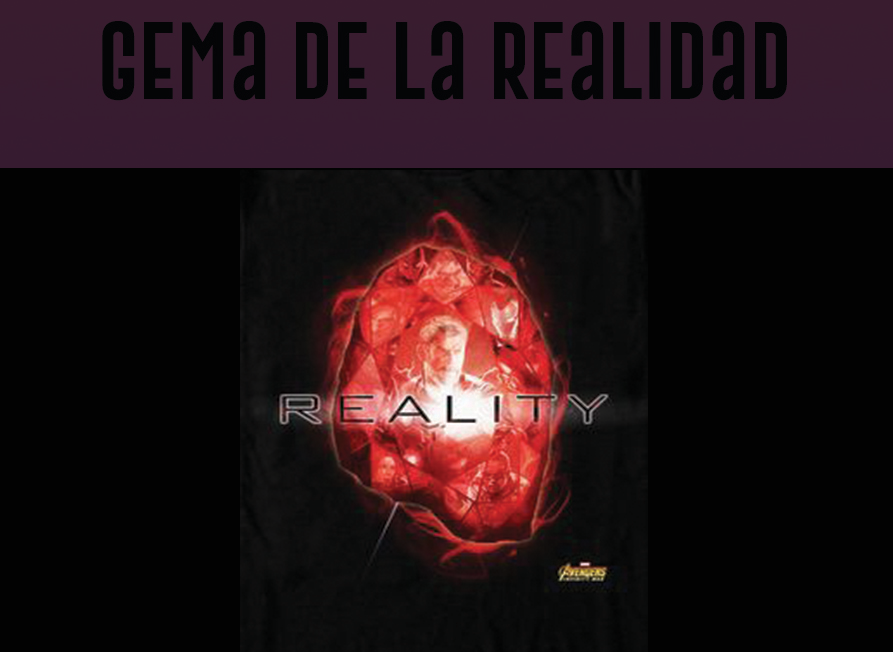
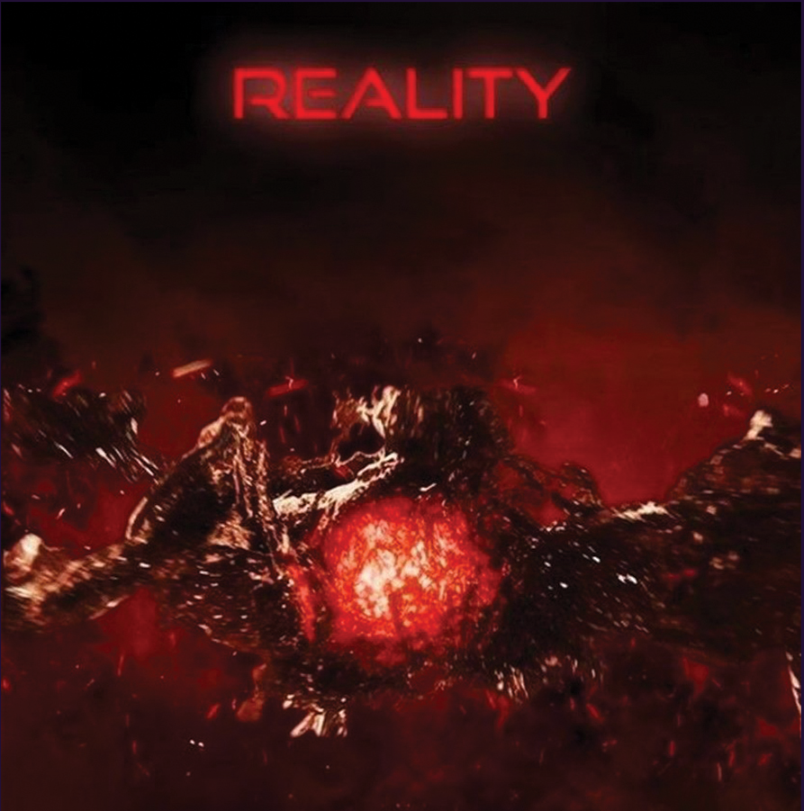

|  |
Color: rojo Unidad de contención original: Éter El Éter se presenta como un líquido oscuro, rojo y viscoso, a diferencia de las otras unidades de contención de las Gemas del Infinito encontradas que son sólidas. El Éter actuaba como una fuerza simbiótica, capaz de ser absorbido por el cuerpo de un huésped vivo, concediéndole a esa persona una inmensa fuerza, poder y capacidades aparentemente ilimitadas. Solamente dos personas, Jane Foster y Malekith, se sabe que han sido anfitriones del Éter, pero las circunstancias impidieron que el potencial completo del Éter fuera explorado. La Gema de la Realidad es considerada la Gema más poderosa, otorgando a su usuario deseos materiales y la capacidad de controlar la forma del universo mismo. Thanos luego robó la Gema de la Realidad del Coleccionista y la insertó en su Guantelete del Infinito, para después poder chasquear sus dedos. Apareció por primera vez en thor, cuando Jane Foster lo absorbió por accidente |
|  |